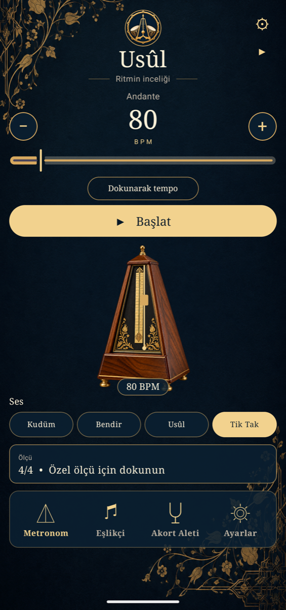

Kaynağa sadık gösterim
Hece, nota çizgisi ve ses birbirinden bağımsız saklanır. Te, Ke, Tâ ve Hek konumları adlarına göre tahmin edilmez.
Türk mûsikîsi için ritim çalışma ortamı
Usûlleri yalnızca saymaz; kaynaktaki heceyi, nota çizgisini ve çalınacak sesi ayrı ayrı koruyarak görünür, işitilir ve takip edilebilir hâle getirir.

Çalış, dinle, gör
Görsel vuruş takibi, gerçek çalgı sesleri ve programlanabilir eser akışı aynı çalışma düzeninde buluşur.
Hece, nota çizgisi ve ses birbirinden bağımsız saklanır. Te, Ke, Tâ ve Hek konumları adlarına göre tahmin edilmez.
Düm–Tek vuruşlarını doğal örneklerle dinleyin; reverb, ses seviyesi, ışık çerçevesi ve titreşimi isteğinize göre ayarlayın.
Çalınan nota ve hece kırmızı vurguyla eşzamanlı izlenir. Büyük usûller dengeli satırlara bölünerek ekrana sığar.
Peşrev, Saz Semâîsi, Saz Eseri ve Şarkı için bölüm, usûl, tempo ve ölçü sayılarını ayrı ayrı programlayın.
50–2000 Hz aralığında kromatik dinleme, cent göstergesi ve icra düzeninize göre değiştirilebilir A4 referansı.
Yeni düzeltmeler uygulama açılırken denetlenir; bütünlük doğrulamasını geçen katalog atomik olarak kurulur ve çevrimdışı saklanır.
Aynı usûl, farklı kaynaklar
İsmail Hakkı Özkan ve Hurşit Ungay katalogları kendi hece, mertebe ve çizgi yerleşimleriyle ayrı tutulur. Kullanıcı tek bir kaynağı ya da bütün kaynakları gösterebilir.
Usûl Veri uygulamasıyla yeni bir kitap veya araştırmacı kaynağı eklendiğinde Android uygulaması yeni kaynak seçeneğini APK güncellemesi istemeden oluşturur.
Uygulama içinden
Şeffaf ve denetlenebilir
Android uygulaması önce usul.sazusoz.com adresini, ardından GitHub Pages ve ham GitHub dosyalarını dener. SHA-256, dosya boyutu, kayıt sayısı ve bütün usûl süreleri doğrulanmadan hiçbir katalog etkinleştirilmez.
Usûl · Ritmin inceliği
Android erken erişim için Google Play hesabınızda kullandığınız e-posta adresini iletmeniz yeterli.
emrepinarbasi@gmail.com